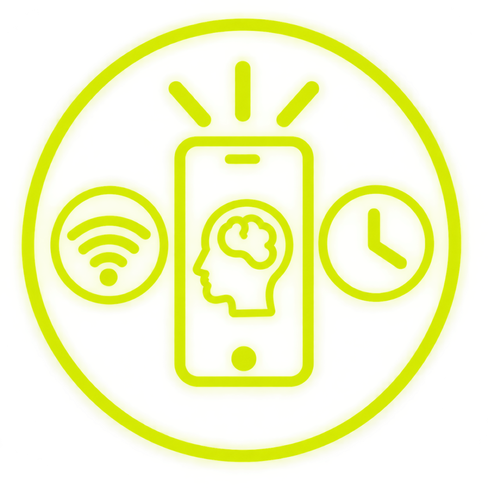

Reduzir
Evitar compras por impulso e avaliar se uma troca de equipamento é realmente necessária.

Produção, uso, descarte e reciclagem de equipamentos fazem parte da discussão sobre desenvolvimento tecnológico responsável.
Evitar compras por impulso e avaliar se uma troca de equipamento é realmente necessária.
Manter, consertar, atualizar ou doar equipamentos quando ainda têm condições de uso.
Encaminhar resíduos eletrônicos a pontos de coleta e sistemas adequados.
| Ação | Exemplo | Benefício |
|---|---|---|
| Uso consciente | Desligar equipamentos quando não forem necessários. | Evita consumo desnecessário de energia. |
| Manutenção | Limpar, reparar e atualizar o aparelho. | Pode prolongar a vida útil. |
| Descarte correto | Levar eletrônicos a pontos de coleta. | Favorece recuperação e reciclagem de materiais. |
| Consumo responsável | Comparar necessidade, durabilidade e impacto. | Reduz desperdício e compras desnecessárias. |
A sustentabilidade tecnológica envolve escolhas individuais, empresas, políticas públicas e infraestrutura. O objetivo é pensar em formas de desenvolvimento que conciliem inovação, inclusão e responsabilidade socioambiental.